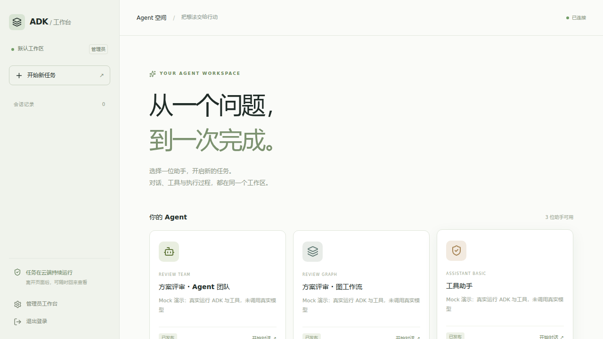
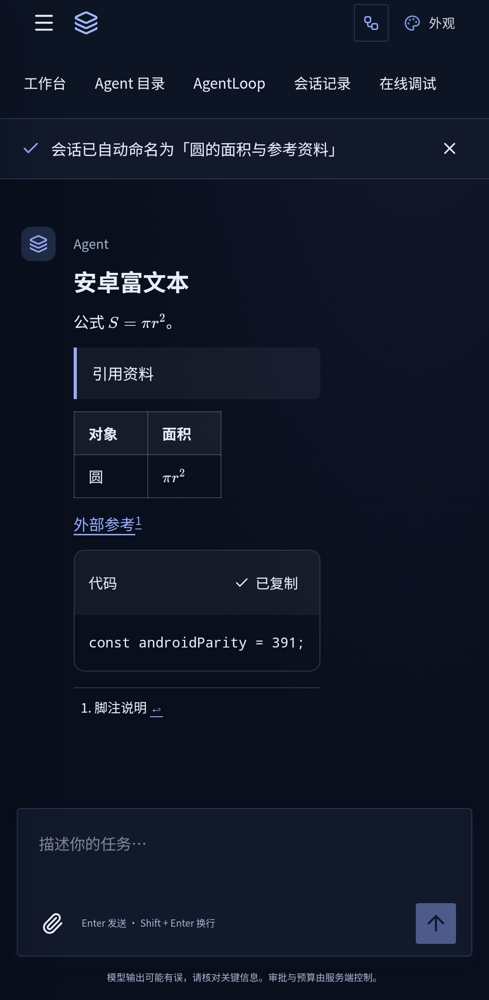
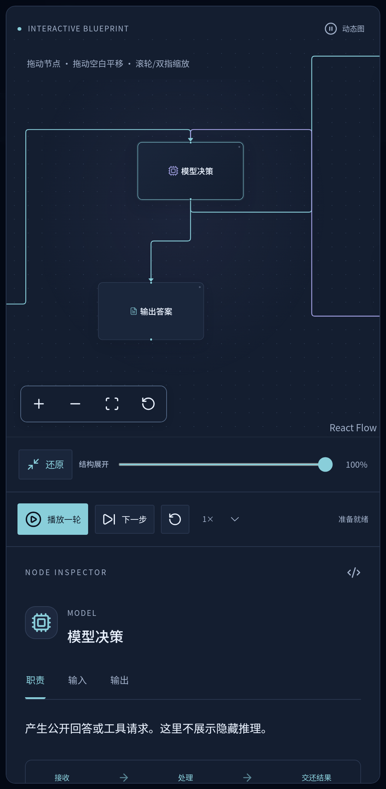

Foogle
从 Agent 发布和会话管理，到审批、工具调用和历史回放。查看桌面 Web 与 Android 安装包上的实际界面，以及各端的支持范围。
Web 工作台
从 Agent 目录打开工具助手、图工作流或 Agent 团队。在会话里提交任务，随后展开调用图查看模型和工具的实际执行节点。



Android 应用
Android 共用工作台和后端，针对触屏采用全屏表单、纵向节点、系统返回键和文件保存窗口。以下截图取自安装后的 Android 15 模拟器。




Web 与 Android 功能对照
仓库当前能力清单中的 10 个模块在两端均已开启。下方也列出基础工作台和管理功能，并标明各端的操作差异与验收边界。
| 功能 | Web | Android |
|---|---|---|
| Agent 与会话 | 从目录使用工具助手、图工作流或 Agent 团队，浏览会话和任务记录。 | 共用已发布 Agent 和账号记录。支持新建、打开和删除会话。 |
| 流式聊天与审批 | 流式回复、任务状态、待审批工具、TXT / Markdown 附件与任务产物。 | 支持相同任务流程，使用系统文件选择界面。跨端审批仍需专项设备验收。 |
| 富文本消息 | Markdown、公式、代码、表格、引用和脚注。 | 表格可横滑，代码用原生剪贴板复制，外链交给系统浏览器。 |
| 会话命名 | 手动重命名或请求模型自动命名，历史和侧栏同步。 | 同一命名接口。安装包已验证命名、失败重试及系统返回键。 |
| 动态调用图 | 模型、工具、MCP、插件节点，支持筛选、布局保存、全屏和单轮详情。 | 默认纵向排列，轻点打开全屏节点详情，系统返回键逐层关闭。 |
| 画布操作 | 拖动节点、平移、缩放和适应视图。拖动调整显示位置。 | 触控拖动、双指缩放、横竖屏与全屏切换，保留布局。 |
| AgentLoop 拆解与回放 | 跟随实时事件，历史回放支持暂停、定位和调速。 | 复用回放控件，支持全屏。新增的实时与回放切换仍待新版 APK 复验。 |
| 在线模型调试 | 使用临时密钥测试 Gemini、DashScope 或自定义接口，查看流式和工具结果。 | 支持同一调试协议，切后台清空临时密钥，键盘避让输入区。 |
| 插件中心 | 搜索、安装、更新连接和启停插件，提供 GitHub 只读连接。 | 共用账号和插件配置，切后台清除未保存的凭据。 |
| MCP 中心 | 新增连接，发现 HTTP / SSE 工具，逐项授权并查看轨迹。 | 共用连接和授权。表单适配触屏，切后台清除未保存的 Token。 |
| Skills 中心 | 创建、编辑、启停和导入导出 SKILL.md。 | 从系统文件选择器导入，通过系统保存窗口导出 Markdown。 |
| Google 登录与绑定 | 已配置 OAuth 时可登录或绑定 Google 账号，进入原工作区。 | 使用系统账号选择器，需登记签名并配置 HTTPS 后端。真实 Google 授权仍待设备验收。 |
| 管理员工作台 | 配置、探测模型连接，设置工具与预算，发布 Agent 版本并查看审计。 | 共用管理 API，管理列表适配单列，表单和详情采用全屏布局。 |
| 本地模型与离线问答 | 连接 API 所在机器上的模型服务，用于服务器侧 Agent 推理。 | 带 Pocket SDK 的离线安装包可导入 GGUF，在设备上进行离线问答。 |
功能口径来自 Foogle 的 Web / Android 平台清单和验证记录。界面证据包含协议夹具与 Android 模拟器测试，真实模型验证与设备覆盖按各项记录说明。